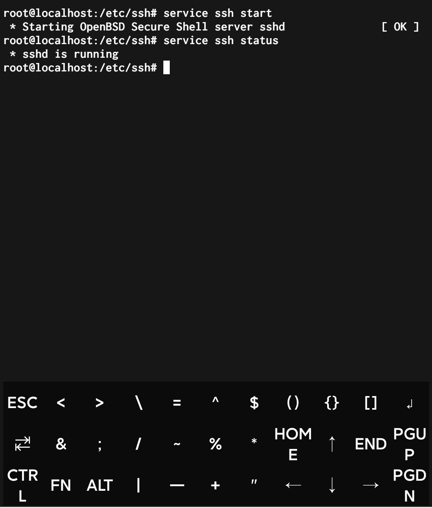
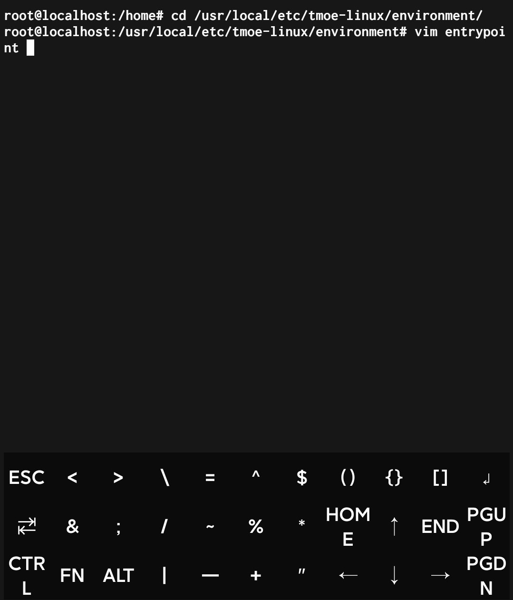
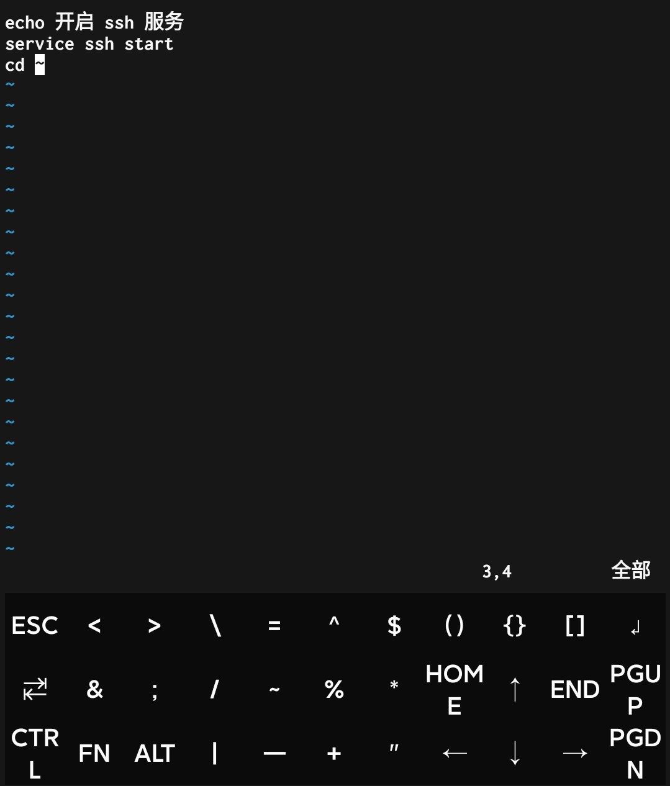
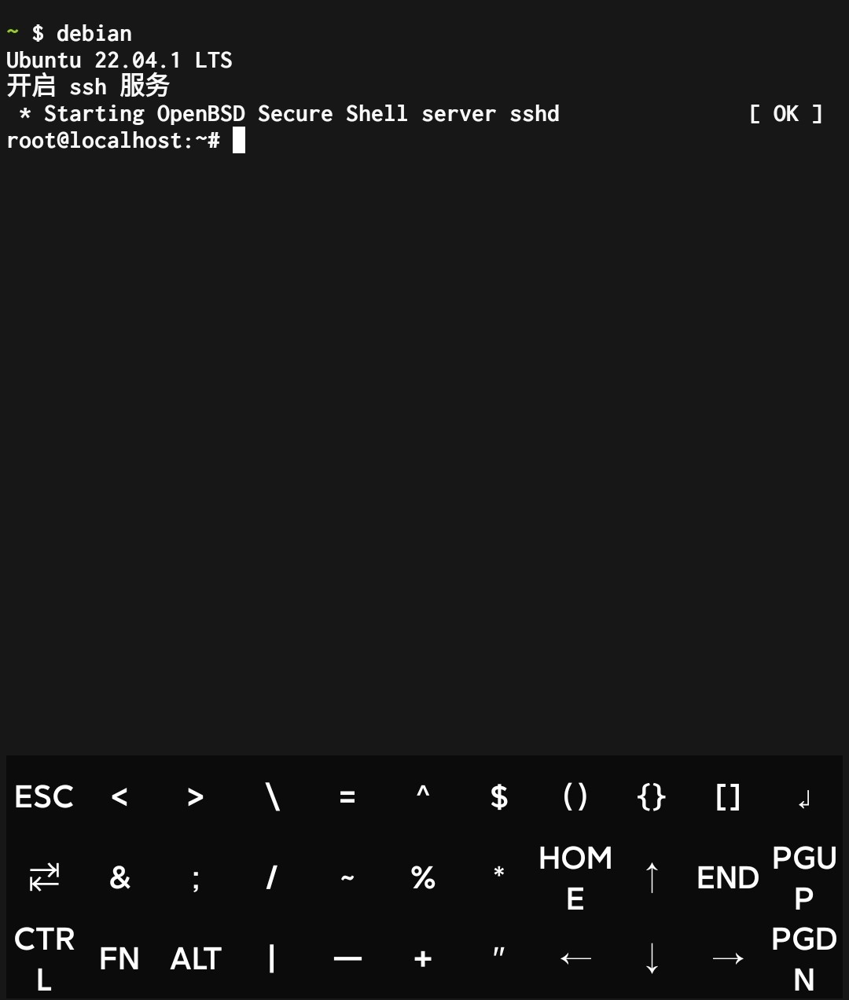

【Termux】第2期：通过 ssh 连接手机 Termux 服务器
上期回顾
在上一期中，在 Termux 软件中通过 proot 容器安装了 Ubuntu 22.04 系统。这个是完整的 Linux 系统，可以像操作远程服务器一样对容器进行操作。但由于是手机软件模拟的容器，在开启一些服务的时候并不能像一般的 Linux 系统一样操作，需要一些特殊的方式。本期主要讲述开启 ssh 服务，可以通过电脑端使用 VS Code 对手机服务器进行操作。
进入 Termux proot 容器
1 | debian |
通过 apt 方式安装 openssh-server
执行以下指令，安装 openssh-server
1 | apt update |
修改 openssh 默认启动端口
由于通过 proot 容器的方式安装系统，在这种方式下 Android 系统会对软件做出限制，使得软件无法启用 1024 以下的端口号。openssh 默认端口号为 22，需要将端口号更改为 1024 以上的端口，端口号可以随意指定，这里我们将端口号改为 8022 端口。
进入 openssh-server 配置文件夹
1 | cd /etc/ssh |
通过 vim 编辑器修改配置
1 | vim sshd_config |
- 进入编辑器后，输入 i 进入编辑模式
- 找到 Port ，删除前面的 # ，将22修改为8022
- 按 ↓ ，找到 PermitRootLogin ，删除前面的 #，将后面的内容修改为 yes
- 修改完成后，按 Esc 退出编辑模式
- 输入 :wq ,回车保存退出
开启 ssh 服务
配置完成后，执行以下指令，开启 ssh 服务
1 | service ssh start |
执行以下指令，检查 ssh 状态
1 | service ssh status |
若显示 sshd is running，则启动成功，如图所示：

开机自动启动 ssh 服务
对于 tmoe 工具，可以通过修改配置文件实现启动容器的同时自动开启服务
执行如下指令，进入配置文件夹：
1 | cd /usr/local/etc/tmoe-linux/environment |
编辑 entrypoint 文件
1 | vim entrypoint |
写入如下指令，编辑方式同上
1 | echo 开启 ssh 服务 |
保存退出，方式同上
如图所示：


验证 ssh 服务是否自启
输入如下指令，退出容器
1 | logout |
输入如下指令，重新启动容器
1 | debian |
如果看到以下语句，则自启成功

本博客所有文章除特别声明外，均采用 CC BY-NC-SA 4.0 许可协议。转载请注明来自 蓝灵风の博客！